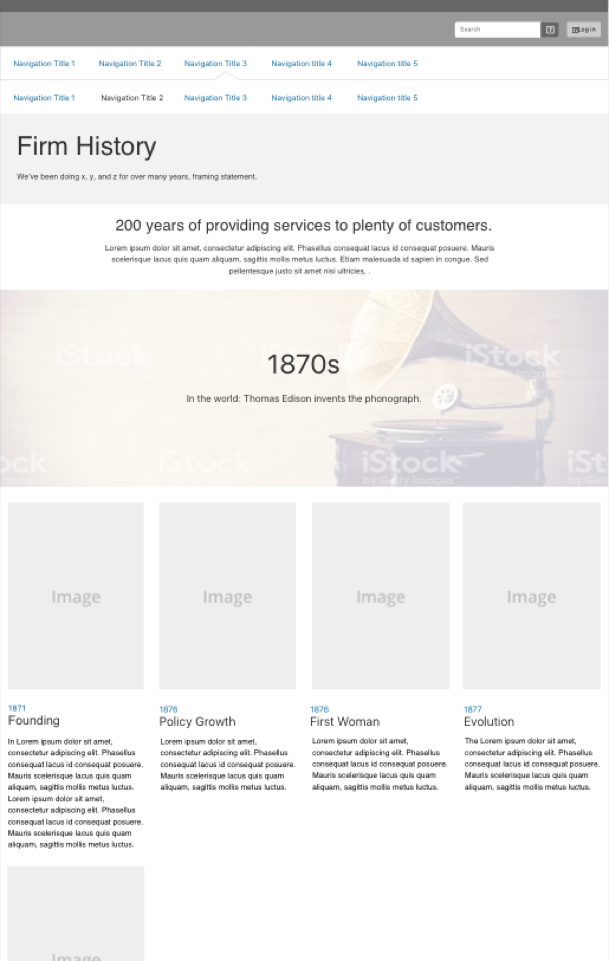
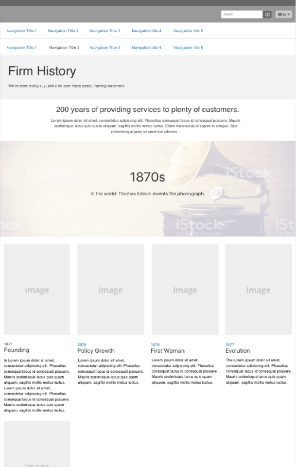

The Problem and Constraints
I migrated 36 pages of content off of Prudential’s former Content Management System to its new one. The content needed to align with the 12-column CSS bootstrap grid. My deadline for this project was September 1. Given the tight deadline, there were no allocated development resources. I designed the pages to be ADA AA-level compliant. On this page, I was tasked with moving and combining content from inside a flash element and text content from below the flash element. I did a dramatic re-design for accessibility violations reasons first and foremost. To solve for accessibility violations, I wrote descriptive headings to summarized small chunks of content and floated the year labels into eyebrows; therefore, a user could scan headings by year or event.

Crafting a User Statement with Empathy
As a user of the firm’s corporate site, I want to be able to scan and easily digest page content with ease and in such a way that I can parse through the information with ease.
The Solution
Research
Based on data, thousands of users visit this page annually. I found the essence of the firm’s narrative by listening to speeches given by its leader and from conversations with my manager and fellow employees about its history. No event in its history could be given more visual importance than another.
Consider Constraints
No development resources
Accessibility violation: there cannot be two headings with the same name. For example, there are two headings labeled “1976” for different content. This violation recurs in various decades.
Security issue: there can no longer be an interactive flash element containing 50% of the content on the page.
Strategy for Unified Experience
There was a lot of overlap in the information presented in the flash element and the text, so I decided to streamline the information into a single narrative by organizing the information according to decade.
Initial wires: Whiteboarding
In initial whiteboarding, I created decade divisions with full-width heroes that present a key event from the decade to give the user context. I thought I could solve for the accessibility issues with visual treatment, so I let the date headings alone in this phase.
 

The Hardest Constraint: No Development Resources
This page becomes a very long scroll on mobile and desktop, which is why I would have liked to be able to collapse the decades as shown, if I’d had development resources allocated to me on this project. This would have given the user a better overall sense of the length of the firm’s history and given them more agency to explore as desired.

Visual Design
Images and styles reflect the wires closely and take on timeline characteristics.

I helped Prudential save money by helping it transition off of its current Content Management System before the deadline. I was happy to be trusted with the job. I received positive feedback afterward for not only migrating content but improving the user experiences on the pages.